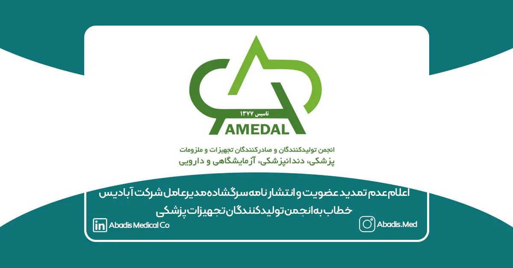

شرکت مخازن طبی آبادیس همواره بر این باور بوده است که تشکلهای صنفی، زمانی میتوانند نقش واقعی خود را ایفا کنند که بر پایه شفافیت، پاسخگویی، استقلال، دفاع از منافع تولیدکنندگان و تحول مستمر اداره شوند. از همین رو، پس از سالها عضویت، مشارکت و پیگیری مسائل صنفی، مدیرعامل این شرکت تصمیم گرفت حق عضویت خود را تمدید نکند و طی نامهای سرگشاده، دلایل این تصمیم را بهصورت مستند و شفاف با اعضای انجمن و فعالان صنعت در میان بگذارد. آنچه در ادامه میآید، متن کامل این نامه است؛ نامهای که با هدف مطالبه اصلاحات بنیادین، ارتقای جایگاه تشکلهای صنفی و تقویت تولید واقعی در صنعت تجهیزات پزشکی منتشر میشود.
متن نامه به شرح زیر است:
اعضای محترم هیئتمدیره و اعضای انجمن تولیدکنندگان و صادرکنندگان تجهیزات و ملزومات پزشکی، دندانپزشکی، آزمایشگاهی و دارویی
موضوع: پاسخ به نامه شماره 110/الف/1405 مورخ 1405/01/23 و اعلام انصراف از ادامه عضویت در انجمن
با سلام
پیرو نامه شماره 110/الف/1405 مورخ 1405/01/23 آن انجمن، که در تیرماه ۱۴۰۵ به اینجانب ابلاغ شد و طی آن درخواست پرداخت حق عضویت سال ۱۴۰۵ مطرح گردیده است، بدینوسیله اعلام میکنم که حق عضویت خود را تمدید نخواهم کرد و انصراف خود را از ادامه عضویت در انجمن اعلام میکنم.
این تصمیم نه حاصل یک دلخوری شخصی است و نه نتیجه یک اتفاق مقطعی؛ بلکه حاصل سالها مشاهده، مشارکت، انتظار و امیدی است که امروز دیگر برای من باقی نمانده است.
واقعیت این است که عضویت در انجمن تاکنون هیچ دستاورد صنفی ملموس، قابلاندازهگیری و مؤثری برای مجموعه ما نداشته است.
در موضوعات کلان نیز، هرچند پیگیریهایی از سوی انجمن انجام شده، اما در عمل تأثیر محسوسی بر تصمیمات دولت مشاهده نشده است. در نهایت، دولت مطابق سیاستها و اقتضائات خود تصمیم گرفته و انجمن نیز نتوانسته نقش مؤثر، منسجم و تعیینکنندهای در دفاع از منافع تولیدکنندگان ایفا کند.
اما شاید بزرگترین مشکل انجمن، نه صرفاً ضعف در نتیجهگیری، بلکه نبود شفافیت، پاسخگویی و نتیجهمحوری باشد.
اعضا نه گزارش منظم و مستندی از عملکرد هیئتمدیره دریافت میکنند، نه از نتایج اقدامات مطلع میشوند و نه شاخص روشنی برای ارزیابی موفقیت یا شکست پیگیریها وجود دارد.
شاید اقداماتی انجام شده باشد، اما مدیریتی که نتواند عملکرد خود را شفاف، مستند و نتیجهمحور گزارش کند، از نگاه اعضا تفاوت چندانی با مدیریتی که اقدامی نکرده است، نخواهد داشت. و اگر اقداماتی انجام شده اما بدون اثربخشی، بهرهوری و نتیجه بوده است، آن نیز نیازمند توضیح و پاسخگویی است.
در کنار این موضوع، مشکلات بنیادینی سالهاست تکرار میشوند، بدون آنکه ارادهای جدی برای حل آنها دیده شود؛ از جمله:
- ایجاد ارتباط مؤثر با دستگاههای دولتی برای همه اعضای انجمن، نه صرفاً افراد خاص.
- تعیین تکلیف وضعیت عضویت افرادی که تولیدکننده واقعی نیستند یا فاقد پروانه و فعالیت تولیدی معتبرند، اما در ساختار انجمن و حتی هیئتمدیره حضور دارند. یا شفاف سازی همه تخلفات احتمالی.
- نبود شفافیت در جلسات هیئتمدیره، مصوبات، آرای اعضا و اختلافنظرهای احتمالی.
- بلاتکلیف ماندن موضوع عضویت در اتاق بازرگانی و سایر مسائل راهبردی صنف.
در کنار این موضوع، مسئله تعارض منافع نیز نمیتواند نادیده گرفته شود.
طبیعی است که افراد بتوانند در حوزههای مختلف اقتصادی فعالیت داشته باشند و داشتن چند کسبوکار، بهخودیخود ایرادی ندارد. اما جایی که قرار است رسالت یک تشکل صنفی، دفاع از تولیدکنندگان باشد، حضور افرادی که همزمان در حوزه تولید و واردات منافع مستقیم دارند، در هیئتمدیره با پرسش جدی اخلاقی و حرفهای مواجه است.
نمیتوان از یکسو مدافع منافع تولیدکنندگان بود و از سوی دیگر، در موقعیتی قرار داشت که منافع وارداتی نیز در تصمیمات فرد اثرگذار باشد. این دوگانگی، حتی اگر در عمل به تصمیم نادرستی منجر نشود، دستکم اعتماد اعضا را مخدوش میکند و مشروعیت تصمیمگیری را زیر سؤال میبرد.
انجمن برای تولیدکنندگان بنا نهاده شده است و هیئتمدیره آن باید از هرگونه تعارض منافع واقعی یا ادراکشده فاصله داشته باشد. در چنین جایگاهی، صرف پاکدستی کافی نیست؛ بلکه اعضا باید مطمئن باشند که تصمیمگیران، فقط و فقط در جهت منافع تولیدکنندگان تصمیم میگیرند.
اما آنچه بیش از همه نگرانکننده است، فرسودگی فکری و مدیریتی در اداره انجمن است.
سالهاست همان نگاه، همان روشها و همان متدهای اجرایی تکرار میشوند، اما همچنان انتظار نتایجی متفاوت وجود دارد. جای خالی دانشهای نوین مدیریت، حکمرانی تشکلها، مدیریت ذینفعان، مدیریت تعارض منافع، مدیریت پروژه، برنامهریزی راهبردی و کار تیمی بهوضوح احساس میشود.
کارگروهها که قرار بود موتور محرک انجمن و محل مشارکت اعضا باشند، عملاً به ساختارهایی کماثر یا غیرفعال تبدیل شدهاند. بسیاری از آنها ماههاست تشکیل جلسه ندادهاند و اگر هم جلسهای برگزار شده، خروجی، گزارش یا دستاورد مشخصی برای اعضا نداشتهاند.
بدتر از آن، هیچ سازوکار پاسخگویی مؤثری برای این کارگروهها وجود ندارد؛ نه مشخص است چه برنامهای دارند، نه چه مسئلهای را حل کردهاند و نه در برابر اعضای انجمن مسئولیتی احساس میکنند. گویی تشکیل برخی کارگروهها صرفاً برای تکمیل ساختار ظاهری انجمن بوده، نه برای حل مسائل واقعی صنف.
انجمنی که کارگروههایش فعال نباشند، مشارکت اعضا در آن کمرنگ شود و صدای اعضایش شنیده نشود، بهتدریج از یک تشکل صنفی پویا به جمعی محدود از تصمیمگیران تبدیل خواهد شد.
در تمام این سالها اعضای انجمن، پیشنهادهای ارزشمند، عملیاتی و دلسوزانه فراوانی ارائه کردند؛ اما تقریباً هیچکدام حتی وارد مسیر اجرا نشد.
امروز دیگر ارائه پیشنهاد جدید هیچ فایدهای ندارد. اگر ارادهای برای اصلاح وجود داشت، همان پیشنهادهای سالهای گذشته تاکنون اجرا شده بودند. مسئله کمبود ایده نیست؛ مسئله نبود اراده برای تغییر است.
موضوع مهم دیگر، تصویری است که از این انجمن در ذهن بخشی از صنف، مشتریان، سایر تشکلها و فعالان صنعت شکل گرفته است.
متأسفانه بهجای آنکه انجمن بهعنوان نماد اتحاد، اعتبار، تخصص و دفاع از تولید ملی شناخته شود، در برخی محافل با تعابیری مانند تشکلی فرسوده، کماتحاد، ناکارآمد، درگیر تخلفات عضویتی، حامی تولیدات مونتاژی یا غیرواقعی، نزدیک به منافع واردکنندگان و محل حضور تولیدکنندهنماها توصیف میشود.
حتی اگر بخشی از این نگاهها ناعادلانه، اغراقآمیز یا ناشی از سوءبرداشت باشد، نمیتوان از کنار آنها بیتفاوت عبور کرد. وظیفه هیئتمدیره تنها اداره جلسات داخلی نیست؛ بلکه باید از اعتبار تشکل نیز محافظت کند، اعتماد بیرونی را بازسازی کند و اجازه ندهد نام انجمن با نگاههای تحقیرآمیز، بیاعتمادی و ناکارآمدی گره بخورد.
یک تشکل صنفی، فقط با اساسنامه و مهر و سربرگ زنده نمیماند؛ اعتبار واقعی آن در نگاه اعضا، مشتریان، نهادهای دولتی و سایر تشکلها ساخته میشود. وقتی این اعتبار آسیب ببیند، حتی پیگیریهای درست نیز دیگر اثرگذاری لازم را نخواهند داشت.
متأسفانه آنچه امروز در انجمن دیده میشود، شباهت زیادی به بسیاری از ساختارهای مدیریتی فرسوده کشور دارد؛ مسئولیتگریزی، مقاومت در برابر تغییر، ضعف کار گروهی، غلبه حب ریاست بر روح خدمت، نپذیرفتن نقد و این تصور که همه عملکرد خود را موفق میدانند و خود را داناتر از دیگران میپندارند؛ در حالی که خروجیها روایت دیگری دارند.
با تأسف باید بگویم که بوی پایان انجمن تولیدکنندگان و صادرکنندگان تجهیزات و ملزومات پزشکی، دندانپزشکی، آزمایشگاهی و دارویی به مشام میرسد.
نه پایان یک نام یا شخصیت حقوقی، بلکه پایان تدریجی اعتماد، سرمایه اجتماعی، اعتبار بیرونی و اثرگذاری صنفی آن.
این نامه از سر دلخوری شخصی نوشته نشده است؛ بلکه از سر دلسوزی برای صنفی است که میتوانست بسیار قدرتمندتر، اثرگذارتر، معتبرتر و متحدتر از امروز باشد.
تا زمانی که تغییرات واقعی، شفاف، ساختاری و قابلاندازهگیری در عملکرد انجمن نبینم، دیگر عضو این انجمن نخواهم بود و حق عضویت خود را تمدید نخواهم کرد.
امید به اصلاح، تنها دلیلی بود که باعث شد سالهای گذشته همچنان عضو انجمن بمانم؛ اما امروز حتی آن امید حداقلی نیز برای من باقی نمانده است.
از نگاه من، امروز انجمن دیگر صرفاً به اصلاحات جزئی یا تغییر چند رویه اجرایی نیاز ندارد؛ بلکه به یک تحول اساسی در نگرش، ساختار، شیوه اداره و ترکیب مدیریتی نیازمند است. شاید حتی لازم باشد عدم تمدید عضویت توسط اعضا، مطالبهگری جدی و بازخواست شفاف هیئتمدیره به مطالبهای فراگیر در میان اعضا تبدیل شود تا این پیام بهروشنی منتقل گردد که ادامه مسیر فعلی دیگر مورد پذیرش نیست. هرچند با شناختی که از شرایط موجود دارم، متأسفانه نشانهای از شکلگیری چنین مطالبهای نیز دیده نمیشود.
همچنین، مطالعه گزارش آخرین جلسه فوقالعاده انجمن مورخ ۲۲ تیرماه ۱۴۰۵ که با حضور تعدادی از اعضا برگزار شد (که البته اینجانب در آن جلسه حضور نداشتم)، حتی با یک تحلیل حداقلی نیز این برداشت را ایجاد میکند که همچنان بخش قابل توجهی از جلسات، تکرار همان مباحث گذشته است؛ بدون تعیین اولویتهای واقعی صنف، بدون توجه به اصل «اهم و فیالاهم»، بدون عارضهیابی دقیق مسائل و بدون تحلیلهای مدیریتی و راهبردی مبتنی بر داده. در بسیاری از موارد، شیوه مواجهه با مسائل بیش از آنکه مبتنی بر نظاممند کردن حل مسئله باشد، رنگوبوی حلوفصلهای موردی و کدخدامنشانه دارد؛ رویکردی که شاید در کوتاهمدت برخی مشکلات را به تعویق بیندازد، اما قادر به حل ریشهای مسائل صنف نخواهد بود.
ممکن است اعضای انجمن نیز در شکلگیری وضعیت امروز سهمی داشته باشند؛ اما سهم آنان با سهم کسانی که مسئولیت را پذیرفتند، با رأی اعضا انتخاب شدند و اختیار اداره انجمن را در دست گرفتند، یکسان نیست. مسئولیت اصلی، همواره متوجه مدیرانی است که قدرت تصمیمگیری داشتهاند. تاریخ، موفقیتها و شکستهای یک تشکل را به نام اعضا نمینویسد؛ به نام مدیرانی مینویسد که سکان آن را در دست داشتهاند.
مشکل امروز انجمن، کمبود عضو یا کمبود ایده نیست؛ مشکل، از دست رفتن اعتماد است. اعتماد نیز با شعار، جلسه و وعده بازنمیگردد؛ تنها با تغییر واقعی، پاسخگویی، شفافیت و نتیجه بازمیگردد. اگر این اعتماد احیا نشود، هیچ تشکلی، حتی با بهترین اساسنامه و بیشترین تعداد عضو، دوام نخواهد آورد.